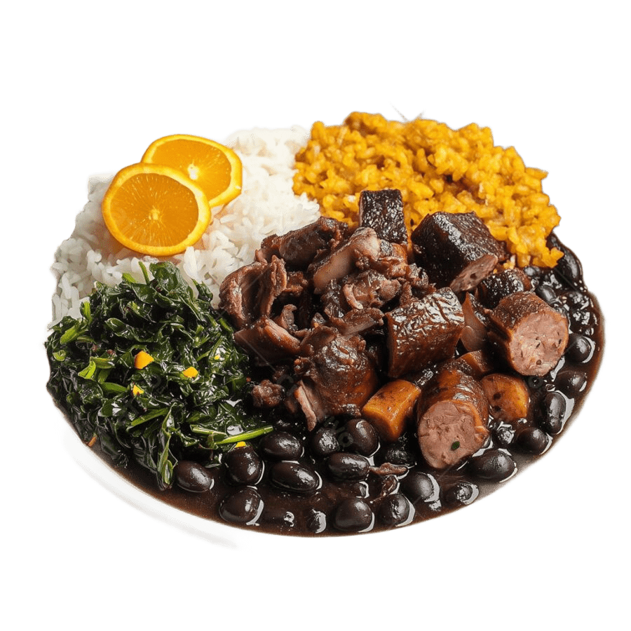

Lave o feijão preto e deixe de molho em água por cerca de 8 horas.
Corte as carnes em pedaços e coloque em uma panela grande com água para cozinhar por alguns minutos.
Em outra panela, aqueça o óleo e refogue a cebola e o alho até ficarem dourados.
Coloque o feijão escorrido na panela com os temperos e misture bem.
Adicione as carnes e as folhas de louro, cubra com água e deixe cozinhar até o feijão ficar macio e o caldo encorpado.
A Feijoada é tradicionalmente servida com arroz, couve refogada, e farofa.
A Feijoada é um dos pratos mais tradicionais da culinária brasileira e está fortemente associada à região Sudeste, especialmente ao Rio de Janeiro. Sua origem remonta ao século XIX, período em que diferentes influências culturais ajudaram a formar a gastronomia do Brasil, combinando o feijão preto com diversos tipos de carne. A cultura africana teve grande influência no desenvolvimento do prato, contribuindo com técnicas de preparo e o costume de cozinhar feijão com carnes. Com o tempo, a feijoada tornou-se um símbolo da culinária brasileira, sendo muito apreciada em reuniões familiares e restaurantes por todo o país.